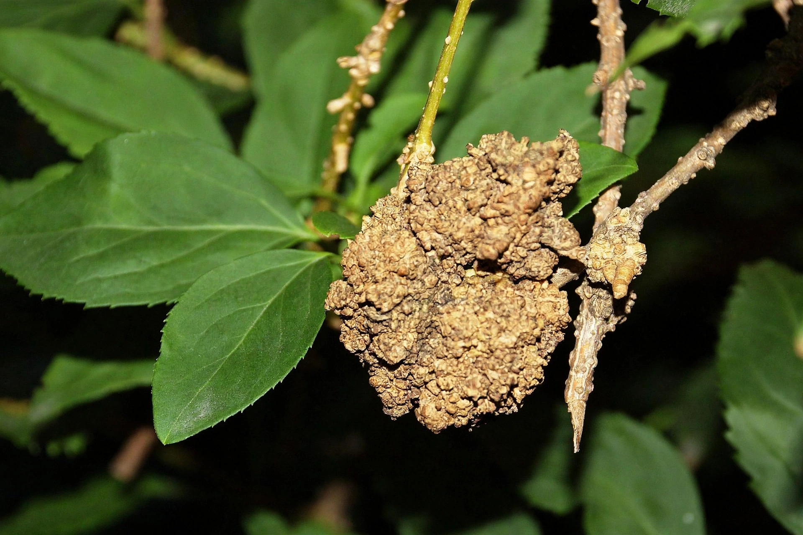

Agrobacterium tumefaciens
From Wikipedia, the free encyclopedia
| Agrobacterium tumefaciens | |
|---|---|
| Domain | Bacteria |
| Phylum | Pseudomonadota |
| Class | Alphaproteobacteria |
| Family | Rhizobiaceae |
| Synonym | Rhizobium radiobacter |
Agrobacterium tumefaciens is a soil-borne, rod-shaped, Gram-negative bacterium that causes crown gall disease in many dicotyledonous plants. It is famous for its natural ability to transfer DNA into plant cells — a mechanism that has made it the workhorse of plant genetic engineering.

Crown gall tumour caused by A. tumefaciensMechanism of infection
The bacterium carries a large Ti (tumour-inducing) plasmid. Upon detecting phenolic compounds (such as acetosyringone) released by wounded plant tissue, virulence (vir) genes on the plasmid are activated. A segment of the plasmid, the T-DNA, is excised and transferred into the plant cell, where it integrates into the plant genome. T-DNA genes direct the production of plant growth hormones, causing tumour-like galls, and of opines — unusual amino-acid derivatives that the bacteria use as food.
Use in biotechnology
By replacing the tumour-causing genes with genes of interest, scientists use disarmed Agrobacterium strains to produce transgenic plants, including many commercial crops. The method works best with dicots, though techniques have been extended to monocots such as rice and maize.
Taxonomy note
Based on 16S rRNA analysis the species has been reclassified as Rhizobium radiobacter, though the name Agrobacterium tumefaciens remains in wide use.